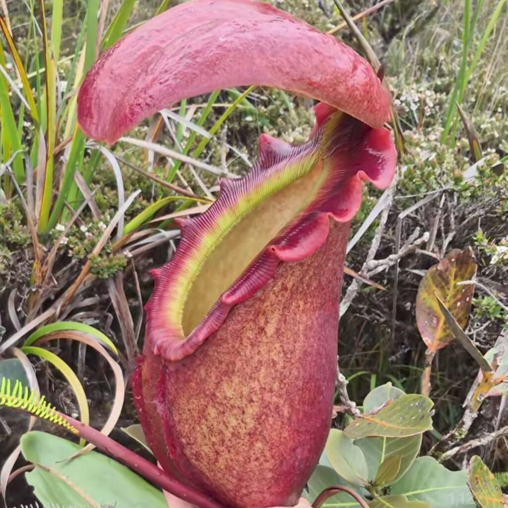

Imagen
*En versión final, aquí podrías poner tu propia foto o una imagen tomada en el jardín.*
Datos clave
- Nombre común: Planta jarra gigante
- Tipo: Carnívora (insectívora)
- Hábitat: Zonas montañosas húmedas
- Características: Produce “jarras” que capturan insectos
- Dato curioso: Es de las Nepenthes más grandes registradas
Descripción breve
Nepenthes rajah es una planta que adapta sus hojas en forma de “jarra”. Dentro, produce líquidos que ayudan a atrapar y digerir insectos, complementando nutrientes que el suelo no le aporta. Esta ficha es un ejemplo de cómo un visitante puede consultar información al instante usando QR.